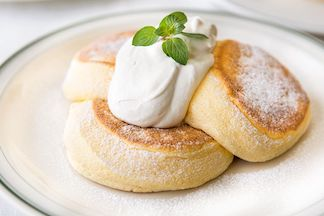

pancakes

ingredients
- Japanese hot cake mix (150g)
- Egg (1)
- Milk (100mL)
instructions
- Put egg and milk in bowl and mix well
- Put the hot cake mix in the bowl with the egg and milk and mix lightly
- Put frying pan on stove and put on mid heat until it gets hot
- After the frying pan gets hot, turn off the heat
- Take ⅓ of the pancake batter and put onto frying pan (pour on around 30cm above frying pan)
- Let the pancake cook until the batter bubbles on top then flip and let cook until golden brown
- Repeat steps 5 and 6 until you have used all of your batter
- Serve with preferred toppings
soba recipe |
curry recipe |
home